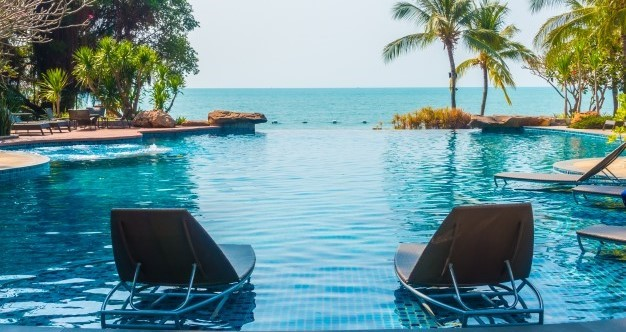
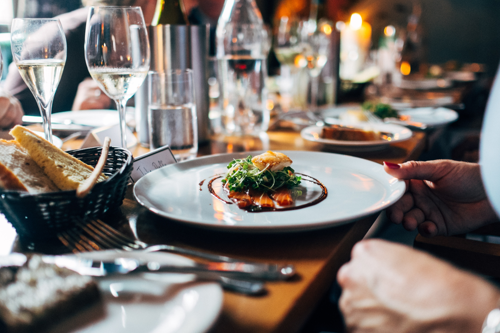
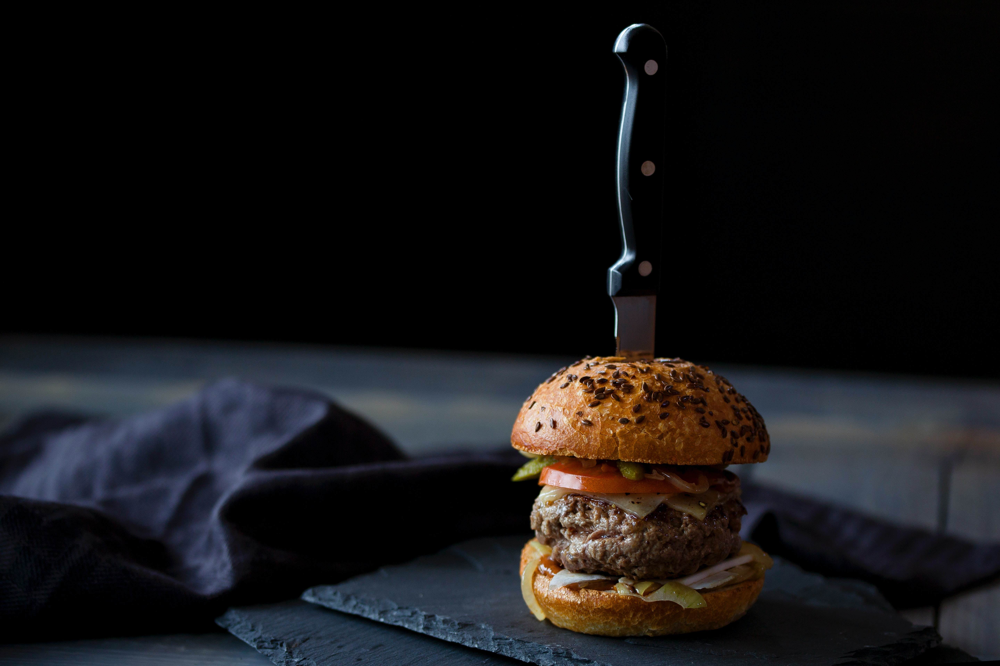
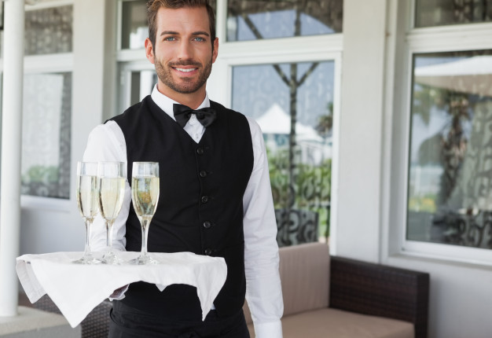
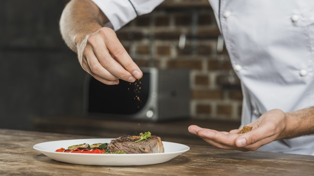
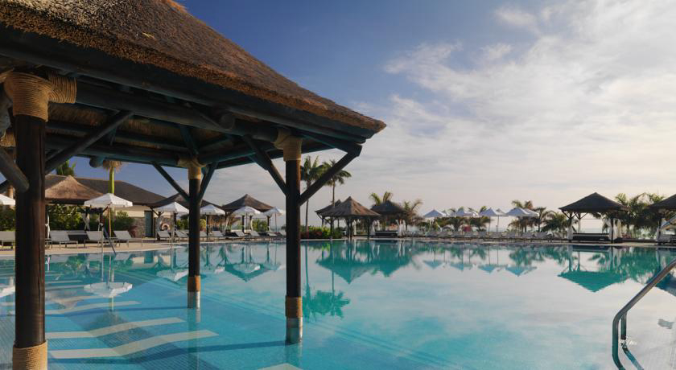
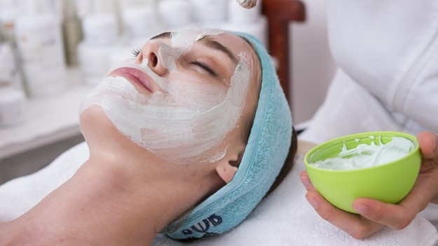
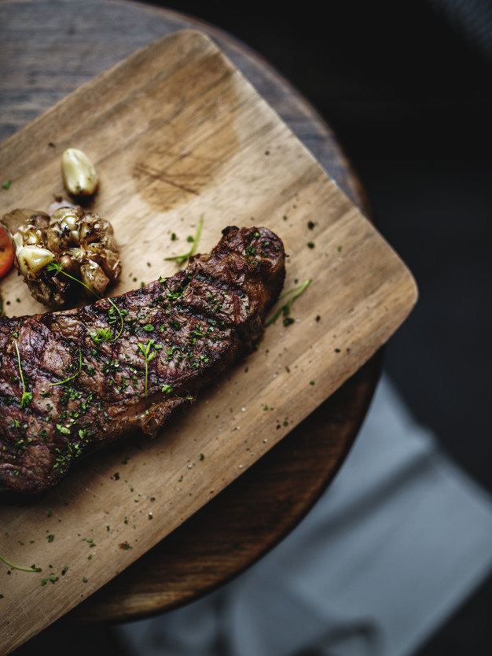
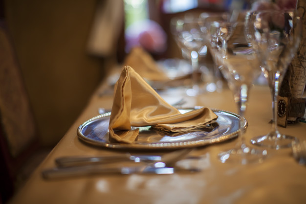
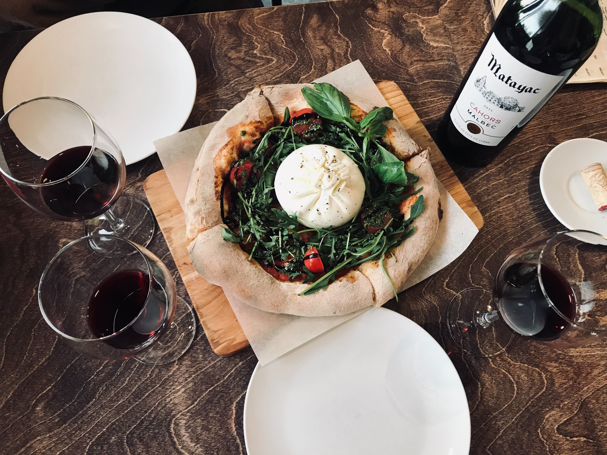

¡Bienvenidos al Hotel Pórtico! Nuestra piscina es el lugar perfecto para relajarse y disfrutar de unas vacaciones inolvidables.
Ubicada en el corazón del hotel, nuestra piscina ofrece una vista espectacular del paisaje y un ambiente de relajación total. Disfrute de una tarde de sol en una de nuestras cómodas tumbonas, o sumérjase en la piscina para refrescarse del calor del día.
Nuestra piscina también cuenta con un bar de piscina, donde puede disfrutar de una amplia variedad de bebidas refrescantes y cócteles mientras se relaja en el agua.
Un spa es un lugar donde la relajación y la tranquilidad son las principales protagonistas. Se trata de un espacio pensado para cuidar del cuerpo, la mente y el espíritu. Es un lugar donde se puede escapar del estrés y la rutina diaria y disfrutar de un ambiente relajante y acogedor.

En nuestras piscinas podrás disfrutar de los excelentes paltos hechos por nuestros chef

En nuestras piscinas podrás disfrutar de los bares de snacks con sus deliciosas hamburguesas y bebidas

Relajate en la piscina y disfruta de nuestros cócteles

Planea tu boda con nosotros, cuidaremos hasta el más mínimo detalle

Para aquellos que buscan un poco más de actividad, ofrecemos una amplia variedad de actividades acuáticas, como clases de aquaeróbicos, waterpolo y clases de natación.
Además, nuestra piscina está rodeada de hermosos jardines y áreas verdes, lo que hace que el ambiente sea aún más relajante y tranquilo.
Nos enorgullece ofrecer un servicio excepcional y asegurarnos de que nuestros huéspedes tengan una experiencia inolvidable. Así que, si está buscando un lugar para relajarse y disfrutar del sol y la piscina.

Al entrar en un spa, se puede sentir una sensación de calma instantánea gracias a la iluminación suave, la música relajante y los aromas agradables. Muchos spas ofrecen una amplia variedad de servicios, como tratamientos faciales, masajes, exfoliaciones corporales y terapias de agua, entre otros.

En nuestras piscinas podrás disfrutar de los bares de snacks con sus deliciosas hamburguesas y bebidas
Planea tu boda con nosotros, cuidaremos hasta el más mínimo detalle
Planea tu boda con nosotros, cuidaremos hasta el más mínimo detalle
Los masajes son una de las opciones más populares en un spa. Estos pueden variar desde los masajes relajantes hasta los masajes terapéuticos que se enfocan en aliviar dolores y tensiones musculares. Los tratamientos faciales también son muy populares, ya que ayudan a mejorar la apariencia de la piel y a rejuvenecerla. Además de los servicios de tratamiento, los spas también ofrecen instalaciones para la relajación, como saunas, baños de vapor y piscinas. Estas instalaciones ayudan a reducir el estrés y a mejorar la circulación sanguínea.

Si está buscando una experiencia culinaria auténtica de las Islas Canarias, ¡no busque más allá de nuestro restaurante! Nuestro menú ofrece una variedad de deliciosos platos canarios que satisfarán su paladar y lo llevarán a un viaje gastronómico por las islas.

En nuestro restaurante, utilizamos ingredientes frescos y de alta calidad para asegurarnos de que cada bocado sea sabroso y auténtico. También ofrecemos una selección de vinos canarios para acompañar su comida y completar su experiencia culinaria.

Nuestra especialidad es la carne asada junto al plato típico canario de "papas arrugadas con mojo". Estas papas pequeñas y arrugadas se cocinan en agua salada y se sirven con nuestra deliciosa salsa de mojo rojo o verde. También ofrecemos otros platos típicos canarios como el potaje de berros, el sancocho y la carne fiesta.